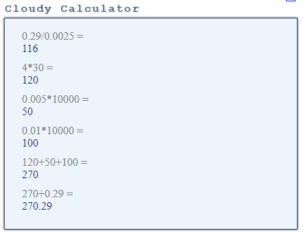

In the previous post I’ve explained a sequential scan by accident: my query needed only one column which was indexed, and I expected to read the index rather than the table. And I had to hint the Oracle example to get the same because the Oracle optimizer chooses the index scan over the table scan in that case. Here is where I learned a big difference between Postgres and Oracle. They both use MVCC to query without locking, but Postgres MVCC is for table rows (tuples) only whereas Oracle MVCC is for all blocks – tables and indexes.
So this second post is about Index Only Scan and the second constant you find in the documentation for the query planner: random_page_cost (floating point) Sets the planner’s estimate of the cost of a non-sequentially-fetched disk page. The default is 4.0. I am here in the situation after the previous post: created table and index, have run a query which did a sequential scan on the table:
explain (analyze,verbose,costs,buffers) select sum(n) from demo1 ;
QUERY PLAN
------------------------------------------------------------------------------------------------------------------------
Aggregate (cost=1554.00..1554.01 rows=1 width=8) (actual time=17.430..17.430 rows=1 loops=1)
Output: sum(n)
Buffers: shared hit=1429
-> Seq Scan on public.demo1 (cost=0.00..1529.00 rows=10000 width=4) (actual time=0.031..13.011 rows=10000 loops=1)
Output: n, a, x
Buffers: shared hit=1429
Planning time: 1.791 ms
Execution time: 17.505 ms
I want to understand why the query planner did not choose an access to the index only. This is where hints are useful: force a plan that is not chosen by the optimizer in order to check if this plan is possible, and then check its cost:
/*+ IndexOnlyScan(demo1) */
explain (analyze,verbose,costs,buffers) select sum(n) from demo1 ;
QUERY PLAN
--------------------------------------------------------------------------------------------------------------------------------------------
Aggregate (cost=1727.29..1727.30 rows=1 width=8) (actual time=5.424..5.425 rows=1 loops=1)
Output: sum(n)
Buffers: shared hit=1429 read=29
-> Index Only Scan using demo1_n on public.demo1 (cost=0.29..1702.29 rows=10000 width=4) (actual time=0.177..4.613 rows=10000 loops=1)
Output: n
Heap Fetches: 10000
Buffers: shared hit=1429 read=29
Planning time: 0.390 ms
Execution time: 5.448 ms
From there you see that an Index Only Scan is possible but more expensive. The estimated cost is higher than the Seq Scan (cost=0.29..1702.29 instead of cost=0.00..1529.00). And the execution statistics shows that I’ve read the 1429 table pages in addition to the 29 pages of the index.
From the hit/read statistics we can note that the create table has left all the table pages in the buffer cache, but this is not the case for the create index. But that’s another story. My concern is why and index only access goes to read all table blocks in addition to the index ones, which brings the cost to 1727.30-1554.01=173.29 higher than the sequential scan.
The clue is in this line showing that all my rows were fetched from heap page, which is the table:
Heap Fetches: 10000
In ACID databases, a modification must not be visible by others until the transaction completion (commit). There are two ways to achieve that. The first way is to read the latest version of data: lock in share mode what you read, so that no concurrent update can happen. The other solution is to query a previous version of data (MVCC – Multi Version Concurrency Control) where uncommitted changes are not visible. Both Oracle and Postgres use MVCC which is great because you can have transactions and queries on the same database. But they do the versioning at a different level.
Oracle MVCC is physical, at block level. Then everything is versioned: tables as well as index, with their transaction information (ITL) which, with the help of the transaction table, give all information about visibility: committed or not, and with the commit SCN. With this architecture, a modified block can be written to disk even with uncommitted changes and there is no need to re-visit it later once the transaction is committed.
Postgres MVCC is logical at row (‘tuple’) level: new version is a new row, and committed changes set the visibility of the row. The table row is versioned but not the index entry. If you access by index, you still need to go to the table to see if the row is visible to you. This is why I had heap fetches here and the table blocks were read.
This explains that the cost of Index Only Scan is high here. In addition to about 30 index blocks to read, I’ve read about 1429 table blocks. But that can be worse. For each index entry, and I have 10000 of them, we need to go to the table row, which is exactly what the 10000 heap fetches are. But I’m lucky because I have a very good clustering factor: I have created the table with increasing values for the column N (generated by generate_series). With a bad clustering factor (physical storage of rows in the table not correlated with the order of index) you would see up to 10000 additional shared hits. Thankfully, the query planner estimates this and has switched to table scan which is cheaper in this case.
Always going to the table rows to see if they are committed would always be more expensive than a table scan. The Postgres vacuum process maintains a Visibility Map as a bitmap of pages that have been vacuumed and have no more tuples to vacuum. This means that all rows in those pages are visible to all transactions. When there is an update on the page, the flag is unset, and remains unset until the modification is committed and the vacuum runs on it. This visibility flag is used by the Index Only Scan to know if it is needed to get to the page.
Let’s run the vacuum and try again the same query:
vacuum demo1;
VACUUM
explain (analyze,verbose,costs,buffers) select sum(n) from demo1 ;
QUERY PLAN
-------------------------------------------------------------------------------------------------------------------------------------------
Aggregate (cost=295.29..295.30 rows=1 width=8) (actual time=2.192..2.193 rows=1 loops=1)
Output: sum(n)
Buffers: shared hit=30
-> Index Only Scan using demo1_n on public.demo1 (cost=0.29..270.29 rows=10000 width=4) (actual time=0.150..1.277 rows=10000 loops=1)
Output: n
Heap Fetches: 0
Buffers: shared hit=30
Planning time: 0.450 ms
Execution time: 2.213 ms
Here, without any hint, the query planner has chosen the Index Only Scan which is now less expensive than a Seq Scan: cost=0.29..270.29
There is an initial cost of 0.29 is calculated from cpu_operator_cost which defaults 0.0025 which means that about 0.29/0.0025=116 operations were charged here. This cost is minimal and I don’t go into details.  Then, to get rows we have to
This brings the cost to the total of 270.29
For the above operation, the SUM(N) this is exactly the same as in the previous post on Seq Scan: cost=25 (cpu_operator_cost=0.0025 for 10000 rows) and is this initial cost because the sum is now only when all rows are processed, and an additional 0.01 for the result row.
In the previous post I used the FULL() hint to compare Oracle Full Table Scan to Postgres Seq Scan, but by default, Oracle chose an index only access because the index covers all the rows and columns we need.
In the previous post we have seen the column projection (from the +projeciton format of dbms_xplan):
Column Projection Information (identified by operation id):
-----------------------------------------------------------
1 - (#keys=0) SUM("N")[22]
2 - (rowset=256) "N"[NUMBER,22]
I need only the column N from the table DEMO1, and this column is in the index DEMO1_N
In Oracle an index does not have an entry for every row but only for rows where at least one of the indexed columns is not null. Here because we have no where clause predicate on N, and because we have not declared the column N as NOT NULL, the access by index may not return all rows. However, the SUM() function does not need to know about the null values, because they don’t change the sum and then the optimizer can safely choose to do an index only access.
Here is the query without hints:
PLAN_TABLE_OUTPUT
------------------------------------------------------------------------------------------------------------------------------------------------------
SQL_ID 6z194712fvcfu, child number 0
-------------------------------------
select /*+ */ sum(n) from demo1
--------------------------------------------------------------------------------------------------------
| Id | Operation | Name | Starts | E-Rows | Cost (%CPU)| A-Rows | A-Time | Buffers |
--------------------------------------------------------------------------------------------------------
| 0 | SELECT STATEMENT | | 1 | | 7 (100)| 1 |00:00:00.01 | 26 |
| 1 | SORT AGGREGATE | | 1 | 1 | | 1 |00:00:00.01 | 26 |
| 2 | INDEX FAST FULL SCAN| DEMO1_N | 1 | 10000 | 7 (0)| 10000 |00:00:00.01 | 26 |
--------------------------------------------------------------------------------------------------------
Column Projection Information (identified by operation id):
-----------------------------------------------------------
1 - (#keys=0) SUM("N")[22]
2 - "N"[NUMBER,22]
This plan looks very similar to the Postgres one after the vacuum: 51 buffers which is approximately the number of blocks in my index here. However, Oracle does not have the ‘vacuum’ requirement because the MVCC applies to the index and Oracle does not need to go to the table to undo the uncommitted changes. But there is something else here. If you remember the previous post, the Oracle cost=1 is equivalent to the cost of a random read (single block) and the cost of reading one block through a larger I/O (multiblock read) is, with default statistics, about 0.278 times cheaper. Here, 7/26= 0.2692 which proves that the cost is based on multiblock reads. Oracle can read indexes with INDEX FAST FULL SCAN in the same way it reads table with FULL TABLE SCAN: with larger I/O. We don’t need any ordering of rows here, because we just do the sum, and then we don’t need to follow the chain of leaf blocks, scattered within the index segment. Just read all blocks as they come, with fast I/O.
Index Fast Full Scan is possible in Oracle because MVCC is at block level for indexes as well as tables. You can just read the blocks as of the point in time of the query, without being concerned by concurrent operations that update the index entries or split the blocks. Postgres Index Only Scan is limited because MVCC is on tables only, and then must scan the index in the order of leaves, and must read the visibility map and maybe the table pages.
In Oracle, an index can be used to partition vertically a table, as a redundant storage of a few columns in order to avoid full table scans on large rows, allowing queries to avoid completely to read the table when the index covers all required rows and columns. We will see more about the ‘all rows’ requirement in the next post.